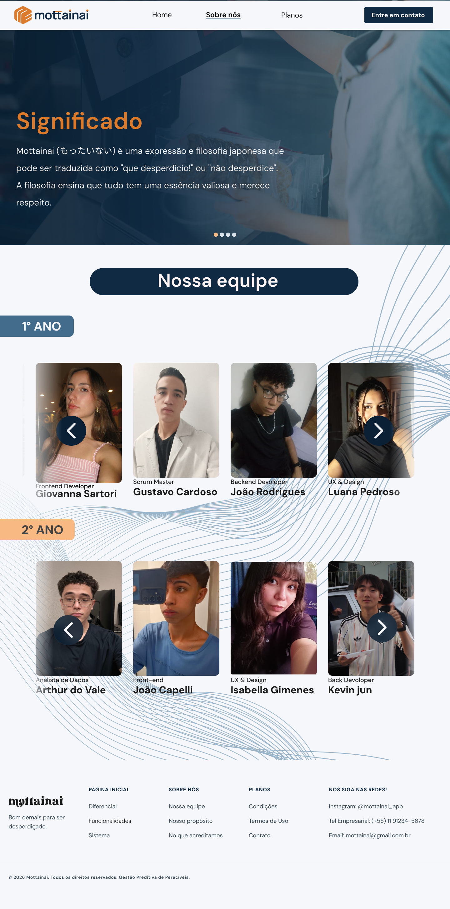
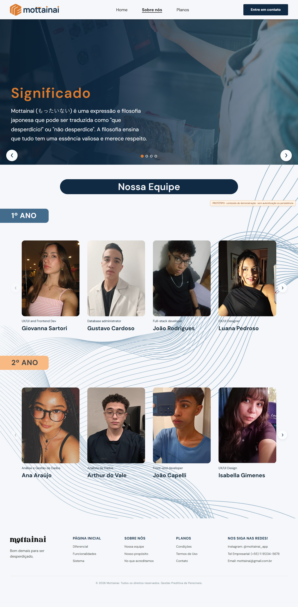

Home — referência e resultado
Capturas para comparação; não integram a interface. O layout de conteúdo aprovado foi preservado.
Figma — HomeProtótipo — Home, 1440 px
Sobre Nós — referência e resultado
Figma — Sobre Nós
Protótipo — Sobre Nós, 1440 px